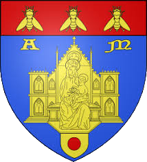
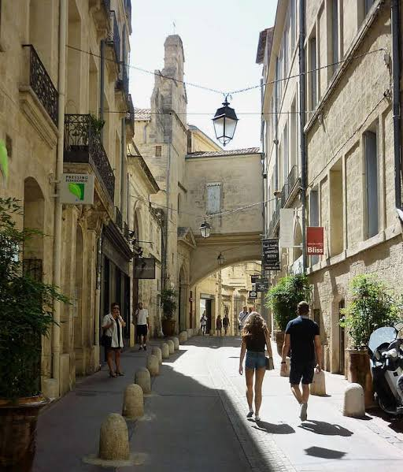
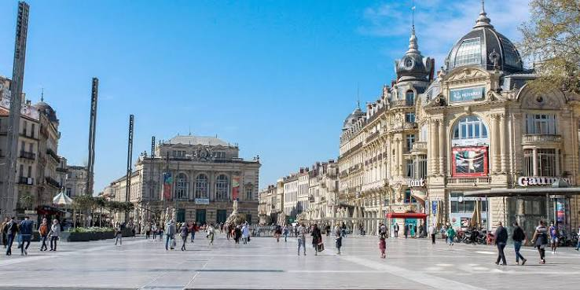

L'Écusson de
MontpellierMille ans de cité marchande et savante au cœur du Languedoc


⟹ Savoir-Faire & Artisanat ⟸

Montpellier est une ville médiévale, et non une cité héritée de Rome. Son histoire commence précisément à la fin du Xe siècle. Le 26 novembre 985, le comte Bernard de Melgueil concède à un certain Guilhem un domaine agricole situé sur un petit relief dominant la plaine. Cet acte est considéré comme l'acte fondateur de Montpellier.
Autour de cette possession se développe une seigneurie dirigée par la dynastie des Guilhem. La position du site est favorable : il se trouve près d'axes reliant le littoral, la vallée du Rhône, Toulouse et les routes de pèlerinage vers Saint-Jacques-de-Compostelle. Marchands, artisans et voyageurs s'y installent rapidement.
Dès le XIIe siècle, Montpellier devient une ville commerçante de premier ordre. Elle développe des relations avec les grands ports méditerranéens. Épices, tissus, métaux, teintures et produits venus d'Orient circulent dans ses rues. Cette activité marchande donne à la cité un caractère cosmopolite exceptionnel pour l'époque.

La médecine joue très tôt un rôle majeur. En 1181, Guilhem VIII proclame la liberté d'enseigner la médecine, sans distinction d'origine. Cette ouverture favorise les échanges de savoirs latins, juifs et arabes. Le 17 août 1220, les premiers statuts de l'universitas medicorum organisent officiellement l'enseignement médical. Montpellier possède aujourd'hui la plus ancienne école universitaire de médecine du monde occidental encore en activité.
La présence d'une importante communauté juive contribue également au rayonnement intellectuel de la cité. À la fin du XIIe siècle est aménagé le mikvé médiéval, bain rituel exceptionnellement bien conservé. Philosophes, médecins et traducteurs participent alors à la circulation des connaissances autour de la Méditerranée.
La forme de l'Écusson naît au Moyen Âge. À partir de 1196, l'œuvre de la Commune Clôture organise la construction et l'entretien d'une enceinte englobant Montpellier et une partie de Montpelliéret. Le tracé de cette muraille, en forme approximative d'écu, donnera plus tard son nom au centre historique.
1204 marque un tournant politique. Marie de Montpellier épouse Pierre II d'Aragon. La ville passe sous la souveraineté de la couronne d'Aragon tout en obtenant d'importantes libertés communales. Un consulat urbain se développe et les habitants administrent une large part de leurs affaires.
Montpellier appartient ensuite au royaume de Majorque, tout en restant l'une des grandes places commerciales et intellectuelles du Midi. En 1289, la bulle Quia sapientia du pape Nicolas IV crée un Studium generale réunissant les enseignements de médecine, droit et arts.
En 1349, Montpellier est rattachée au royaume de France. Le roi de Majorque vend la ville au roi Philippe VI. Ce changement intervient dans une période difficile : la peste noire, les crises démographiques et les troubles de la guerre de Cent Ans mettent fin à une partie de la prospérité du grand Moyen Âge.
La ville conserve cependant sa fonction universitaire, commerciale et administrative. Au fil des siècles, couvents, églises, collèges et hôtels particuliers densifient l'intérieur de l'enceinte. Le réseau de ruelles étroites, de passages et de cours privées qui caractérise encore l'Écusson se fixe progressivement.
Au XVIe siècle, la Réforme protestante bouleverse Montpellier. La ville devient l'un des principaux bastions huguenots du Languedoc. Églises et couvents sont endommagés au cours des guerres de Religion, et la population connaît plusieurs décennies de tensions.
En 1622, Louis XIII assiège Montpellier. Après plusieurs semaines de résistance, la paix est négociée. Le roi fait construire une puissante citadelle à l'est de la ville afin de contrôler cette place stratégique. Le site de cette ancienne citadelle est aujourd'hui occupé par le lycée Joffre.
À partir du XVIIe siècle, Montpellier retrouve une forte croissance. De nombreux hôtels particuliers sont bâtis pour les familles de magistrats, de médecins et de financiers. La promenade du Peyrou, l'arc de triomphe et l'aqueduc Saint-Clément donnent au secteur occidental de la ville un aspect monumental.
Les remparts médiévaux disparaissent progressivement, mais leur empreinte demeure. Les boulevards entourant le centre ancien reprennent largement leur tracé. Deux portes fortifiées principales ont survécu : la tour de la Babote et la tour des Pins.

Au XIXe siècle, l'ouverture de nouvelles voies, l'arrivée du chemin de fer et la création d'équipements modernes transforment la ville. Pourtant, contrairement à d'autres grandes villes françaises, une large partie du tissu médiéval de l'Écusson est conservée.
Aujourd'hui, l'Écusson reste le cœur historique de Montpellier. Ses rues suivent encore un parcellaire hérité du Moyen Âge. Hôtels particuliers, faculté de médecine, cathédrale Saint-Pierre, mikvé, places classiques, anciennes tours de l'enceinte et façades des XVIIIe et XIXe siècles y composent près de mille ans d'histoire urbaine.
L'Écusson n'est pas un décor médiéval reconstitué : c'est le plan même de Montpellier qui a traversé les siècles, de l'enceinte des Guilhem aux boulevards contemporains.
Synthèse historique et patrimoniale